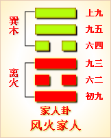
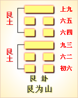

高岛易断 - 58兑为泽
高岛易断 58 兑为泽
卦体一阴出于二阳之上，二阳在下，上承一阴，象如泽之蓄水。泽以润生万物，犹《兑》以悦服万民，其义相同，此卦所以取象于兑为泽也。
兑
［77］
：亨，利贞。
▲ 甲骨文兑
《兑》本《乾》体，《坤》三动来入《乾》，成《兑》，《兑》之"亨，利贞"，即《乾》之德也。《乾》之四德配四时，《兑》主秋，在夏冬之间，得兼三德，独不及元，故曰"兑亨，利贞"。
《彖传》曰：兑，说也。刚中而柔外，说以利贞，是以顺乎天而应乎人。说以先民，民忘其劳，说以犯难，民忘其死，说之大，民劝矣哉！
《序卦传》曰："巽者，入也。入而后能悦之，故受之以兑。兑者，悦也。"卦体以二五为中，以三上为外，以九为刚，以六为柔。《兑》二五皆九，故曰"刚中"，三上皆六，故曰"柔外"，合之谓：刚中而柔外"。"利贞"者，刚中之德，诚于中也；"悦"者，柔顺之象，形于外也，故曰"悦以利贞"。卦以《坤》交《乾》，乾为天，亦为人，刚者天德，悦者人心，故曰"顺乎天而应乎人"。孔子论政，曰先之劳之，谓为政者当先以悦豫抚民，而后使民任劳，而民不辞其苦，使民犯难，而民不顾其身，是可逸可劳，可生可死，民皆相悦于无言，而莫知其故，悦之道于是为大。"劝矣哉"，谓民之已悦者固悦，即未悦者亦将闻风而悦服矣，为能使民之咸相劝勉也。
以此卦拟人事，《说卦传》曰，"兑，正秋也，万物之所悦也"，故曰"悦言乎兑"。盖时至秋而成熟，而人得其食用，喜其丰盈，斯百事亨通，人心自然欢悦矣，故《传》曰"兑，悦也"。《兑》为口舌，是笑言之出于口也；《兑》为辅类，是欢容之见于面也。《兑》属柔，是谓"柔外"，世之好饰外貌者，往往以容悦为工，其品愈卑，其心愈伪，胁肩谄笑，无所不为，只各求悦，而不知悦在"利贞"也，只知媚人，而不知悦在顺天也。何也？以其无刚中之德也。《兑》之刚中在二五，故能"刚中而柔外"，"刚中"即"利贞"也。二五之爻，皆曰"孚"，"孚"者，孚于刚中耳。得其孚则事事皆亨，即人人皆悦，无劳可也，有劳而人亦不辞；无难可也，有难而人亦不惧。道在有以先之也，惟其先之，乃即所以劝之；有其劝之，乃即所以悦之。劝因悦，不劝亦悦，而人皆欣欣然有喜色矣，是人事之至顺也，亦顺天而已矣。
以此卦拟国家，《兑》《大象》为"丽泽"，"丽"，犹连也，是上下皆泽。上以泽敷下，下以泽感上，感斯悦矣。然一以柔顺抚民，有恩无威，民必悦而不惧，一以刚严御民，有威无恩，民必畏而不悦，是未足为利，亦未足为贞也，悦亦安可恃乎？兑之所以能悦者，在二五之刚得其中耳。二五之刚，主于中，三上之柔，施于外，谓之"刚中而柔外"。悦以柔，悦以刚，实悦以"利贞"也。上《兑》之悦，象取顺天，下《兑》之悦，象取应人，天德好刚，人心喜柔，顺天而天弗违，应人而人咸格，是所谓"顺乎天而应乎人"也。如是而悦以先民，民有任劳而不觉；悦以犯难，民有视死而如归。所谓以佚道使民，虽劳不怨，以生道杀民，虽死不怨杀者是也。是以未当求民之悦，而民自中心而诚悦。忘劳忘死，悦之至也，故悦道之大，在使其民自劝。《传》不曰"劝民"，而曰"民劝"，是不期其劝而自劝，其欢欣鼓舞之情，可从两忘字中，想象得之矣。上古之世，君臣之间，欢然莫逆，理之所是，则相与顺从，不以为悦，理之所非，则更相献替，不以为睽，如盐梅之相和，如水火之相济，此悦而正者也，即悦之大者也。六爻言《兑》，各分刚柔：四刚皆君子，二柔皆小人，"和兑""孚兑"得其吉矣；"有喜""有厉"，当其位矣。三"来兑"，来必多凶；六"引兑"，引亦未光。国家当此，宜抑柔进刚，斯悦得其道焉。
通观此卦，此卦次《巽》，《巽》者二阳在上，一阴入下，故阳顺而下来；《兑》者二阳在下，一阴出上，故阳悦而上往，与《巽》相反。于方位，《兑》者，西也，利美而和，其气为金，从革而新，其决断快利，其音响铿锵，故其德为悦。于四时，《巽》木，春也，《离》火，夏也，《兑》金，秋也，天以三时生物，木气发生，金气收敛，《巽》《兑》相反，而适以相成，中皆互《离》，三时相因，生克自然之运也。大抵兑悦之情，在和顺，而兑悦之气，主肃杀，和顺者柔也，肃杀者刚也。故以柔为悦，其弊必流于谄谀，以刚为悦，其德乃在于"利贞"。卦内初、二、四、五皆刚爻，得其正也；三上皆柔爻，失其正矣。初之"和兑"，得《彖》之"利"；二之"孚兑"，得《彖》之"贞"；四之"喜"，喜即在于利也；五之"厉"，厉即取其贞也；至三之"来兑"，悦以要结以来，故有凶；上之"引兑"，牵连而引，故"未光"。是《传》特著其德，曰刚中柔外，示其用，曰"顺天应人"，极其效，曰"民忘其劳"，"民忘其死"，而所以致其悦者，其道在先，其功在劝，其义则愈推而愈大。
《大象》曰：丽泽，兑，君子以朋友讲习。
"丽"者，连也，"丽泽"，谓两泽相丽，是互相滋益也。朋友者，以互相讲习为益，故象朋友；《兑》为口，故象讲习。《论语》首章，以"学而时习'为悦，以有朋远来为乐，是悦乐之要，莫大于"朋友讲习"，此君子所以取其象于《兑》也。四爻曰"商兑"，商者，相与讲论之义，其象亦取之丽泽。
【占】 问时运：运途平平，能得众心，自然获吉，惟逢三六之年，不利。
○ 问营商：得人扶助，可以获利。
○ 问功名：赖朋友之力可成。
○ 问战征：屯兵陂泽之地，宜于两后营相约进攻，可以获胜。
○ 问婚姻：必是朋友旧好。
○ 问家宅：宅临泽水，宜与朋友同居。
○ 问疾病：宜延相熟医师并诊，方可全愈。
○ 问讼事：宜请朋友公评，不必涉讼。
○ 问六甲：生女。
高岛易断 初九：和兑，吉。
《象传》曰：和兑之吉，行未疑也。
初居卦首，体得《乾》刚，"和兑"者，即和悦也。《乾》曰利物和义，是和即《彖》之所谓利也。人当初交，便觉和衷相济，以斯而悦，悦得其正矣，故吉。《传》曰"行未疑也"，谓人私曲疑虑，每生于转念，当其初，一片天心，固未尝间以人欲也。"和兑"在初，顺天而行，疑于何有？故不曰无疑，而曰"未疑"。
【占】 问时运：运当初爻，以和为贵，万事获吉。
○ 问战征：师克在和，民兵咸悦，有不战来归之象。
○ 问营商：《兑》为正秋，万实告成，天地自然之美利也。营商得此，吉无不利。
○ 问功名：得祥和之气，吉。
○ 问婚姻：有家室和平之乐。
○ 问家宅：一门和气，吉。
○ 问行人：行当即归，无疑。
○ 问讼事：即可和解。
○ 问六甲：生女。
【例】 友人某来，请占谋事成否？筮得《兑》之《困》。
断曰：此卦一阴在二阳之上，以柔之卑，居刚之上。初爻得阳刚，刚以严，柔以和，以刚制柔，所谓和而不流者也。今足下占谋事得此爻，爻属于初，知其事尚在初起。"和"者，为彼此同心，和衷共济。初与四应，四曰"商兑"，"商"谓商量也，正合谋事之意。初爻《传》曰"行未疑"；谓其事必成无疑也；四爻《传》曰"有庆"，谓其事成后，又有庆福也。足下安心从事可也。
高岛易断 九二：孚兑，吉，悔亡。
《象传》曰：孚兑之吉，信志也。
二居下卦之中，以阳居阴，即《彖》所谓"刚中"也。二与五应，"孚兑"者，二孚于五，五亦孚于二，两相孚，即两相悦。二为臣，五为君，是君臣一心，相孚而相悦也，故吉。夫上下之心不相孚，则上下必不相悦，是以有悔，既得其孚，悔自亡矣。《象传》以"信志"释之，谓孚即信也，以其志之可信，故得吉也。
【占】 问时运：运得中正，众心交孚，是以有吉，无悔。
○ 问战征：上下一心，令出惟行，有匹夫不可夺之志，战无不克，吉。
○ 问营商：贸易虽在逐利，要必以信为本，有信则彼此无欺，而商业乃可通行矣。
○ 问婚姻：二五相孚，是阴阳相偶也，吉。
○ 问家宅："有孚挛如，富以其邻"，谓能与邻家，并力致富也。
○ 问功名：《中孚》二爻曰，"我有好爵，吾与尔靡之"，有父子同升之吉。
○ 问疾病：是因疑致疾，今既得相孚，灾悔自亡。
○ 问六甲：生女。
【例】 友人某来，请占气运，筮得《兑》之《随》。
断曰：九二爻得刚中，刚中而孚，孚非阿好；既得相孚，无不相悦，是以吉而悔亡也。人生气运，亦贵得其刚中耳，刚则任事有肝胆，中则任事无私曲，志气刚强，运途中正，自然事事获吉。今足下占得此爻，知足下目下气运旺相。论《兑》为金运，以金水两运为佳；《兑》为秋，岁时以属秋令为佳。《大象》取"朋友讲习"，足下当择朋友，远小人，近君子，自得相扶为益，悔去而吉来也。
【例】 明治二十八年，占我国与美国交际，筮得《兑》之《随》。
断曰：孚者，信也，《中孚》《彖传》曰"悦而巽，孚乃化邦"，是知邦交之道，最宜信义相孚，使两无诈虞，化干戈为玉帛，实两邦之幸福也。今占我国与美国交际，得此爻辞，可知我国与美，两国交际，此后最为亲密，谓之"孚兑，吉，悔亡"。
高岛易断 六三：来兑，凶。
《象传》曰：来兑之凶，位不当也。
三为《兑》主，即《彖》所谓"柔外"也。以柔招悦，故谓之"来"。初曰"和"，二曰"孚"，是不期悦而自悦，有相悦于无言耳。若专以阴柔悦人，亦以阴柔而致人悦，则所以来悦者，皆不以其道，则上下相蒙，适以长诈伪之风也，故"凶"。《传》以"不当位"释之，谓一阴居二阳之上，其位不当，欲以柔道致悦，其悦也，皆由强致而来，是失刚中之德矣。
【占】 问时运：人品卑鄙，专以谄笑求悦，未免为人所贱矣。
○ 问营商：通商之来，固宜和悦相招，然悦不以道，尔诈我虞，是失商道之正也。
○ 问功名：奔竞而来，虽荣必败。
○ 问战征：要皆招徕乌合之众也，不能久持。
○ 问婚姻：有始合终离之象。
○ 问疾病：病有外祟，其象本凶，三至四隔一爻，早则一日，迟则一月，可望愈快。
○ 问讼事：是外来之祸，凶。
○ 问六甲：生女。
【例】 明治二十四年，有友某来，代占某氏气运，筮得《兑》之《夬》。
断曰：兑者，悦也，其悦宜就心中而出，不贵外袭而来。中出者，诚也，外来者，伪也。三曰"来兑"，是专以饰外为悦者也。今君代友占气运，得《兑》三爻，三以阴居阳，为《兑》之主，位本不当，其象专属阴柔，好以巧言悦人，知此友心地不正，颇有口密腹剑之象，未免凶矣。《大象》曰"朋友讲习"，君既谊属朋友，当随时劝诫，务令去伪存诚，乃得化凶为吉。
高岛易断 九四：商兑未宁，介疾有喜。
《象传》曰：九四之喜，有庆也。
"介"，谓节操坚固之义，同《豫》之六二"介于石"之介；又两间曰介，四爻在三五之间，上承五之刚中，下比三之阴柔，是以一身介君子小人之间者也。"商"，商量也，《兑》为口，有商之象。四与初同体，初为事始，无所疑虑，故不待商；四则处上下之交，用刚用柔，皆须商榷，故曰"商兑"。商之而意难遽定，则中心游移，故曰"未宁"。因忧成病，故曰"介疾"。然未宁者终必宁，介然而疾，亦介然而喜矣。《兑》通《艮》，《艮》上《兑》下为《损》，《损》四曰"损其疾，使遄有喜"，其旨相同。《象传》以"有庆"释之，谓商而后宁，疾而有喜，则刚柔得中，天人相合，喜在一人，庆在天下矣。
【占】 问时运：运途未稳，逆则有忧，顺则有喜，万事宜斟酌行之。
○ 问营商："四多惧"，营商在外，必有忧惧不安之事，商量出之，方得有喜。
○ 问功名：功名必从艰苦患难而来者，方得大就。
○ 问婚姻：一时疑惧未成，必待媒妁再三说合，终得成合有喜。
○ 问家宅：现下宅中不安，致多疾厄。《兑》为秋，必待秋时，得以平安有喜。
○ 问疾病：病由心神不安所致，得逢喜事，胸怀宽悦自愈。
○ 问六甲：生女。
【例】 某氏来，请占某缙神之气运，筮得《兑》之《节》。
断曰：兑者，悦也，"未宁"者，不悦也，兑而曰"商"，是介在悦不悦之中。"未宁"若有疾，得宁则有喜，赖此一商之功耳。四处内外之间，又当刚柔之交，孰轻孰重，皆须商酌，故曰"商兑未宁，介疾有喜"。今占气运，得《兑》四爻，知人生气运，亦无中立，从正则吉，从邪则凶，在人自取择耳。择而未安，譬若疾之在身，不能无忧，择之既定，自觉病去身安，喜从中来。四近君位，有贵人之象，能以商度事宜，上辅君德，下协民心，何庆如之？此功此德，正赖某缙绅也。
高岛易断 九五：孚于剥，有厉。
《象传》曰：孚于剥，位正当也。
五处外卦之中，秉《乾》之刚，即《彖传》所谓"刚中"也，悦以"利贞"，五得其贞焉。《兑》为秋，《剥》九月之卦，当《兑》之未孚而至《剥》，是孚之极也。其不言《兑》者，至五《兑》悦既深，浑若相忘，故不见为《兑》，而只见为《剥》。《剥》者即劳与难之事也，劳之难之，事虽为民，而王者则视之若剥也；忘劳忘死，王者虽以为剥，而民实不知其为剥也，故曰"孚于剥"。至此而民已视危为安，王者犹以安为危，故曰"有厉"。事本无厉，有者在君之心，亦凛凛乎其有也。五居尊位，固当然也。《传》释以"位正当"，谓居此位者，皆当存此心也。
【占】 问时运：位得其正，运当其盛，盛极则剥，尤当预防，能时时防剥，斯时时得盛矣。
○ 问战征："孚于剥"者，谓当生死存亡之地，军兵一心，感激奋勇，而不以为剥，诚可谓众志成城，无往不克矣。
○ 问营商：剥者，剥削也，虽有剥削，而深信无疑，必有大利。
○ 问功名：能安命，虽剥必亨。
○ 问疾病：有剥肤之疾，速治则愈。
○ 问六甲：生女。
【例】 明治二十二年，友人某来，请占气运，筮得《兑》之《归妹》。
断曰：运当九五，阳刚中正，本届盛运，爻曰"孚于剥"，言其相悦无言，虽剥亦孚。安不忘危，有思患预防之象，亦有持盈保泰之道，《彖传》所谓"悦以利贞"，惟五当之。今君占气运，得《兑》五爻，知君目下气运得当，刚中柔外，众心咸孚，虽有剥削，亦得相悦以解，事事安和，得行其志。但在君心中，若以为剥，若以为厉，则剥无不复，厉无不安也。五与二正应，五虽不言吉，二之吉，即五之吉也。
高岛易断 上六：引兑。
《象传》曰：上六引兑，未光也。
上六辰在巳，得《巽》气，《巽》为绳，有引之象；《兑》又旁通《艮》，《艮》为手，是以能引，故曰"引兑"。六与三同体，三失位，六引之使应己，是因其来而引之；来既不正，引亦不当，而悦更失其道矣。爻虽未判吉凶，要之后事之失，亦所难免，故《传》以"未光"释之。《乾》为光，六变《乾》为《坤》，故曰"未光"。凡《易》称"引"者，多在阴爻，《萃》六二曰"引吉"，自五引二，引而升也，引在于上，故吉；此爻曰"引兑"，以六引三，引其来也，引在于后，故"未光"。
【占】 问时运：上为卦之终，行运已极，必藉人引掖而能行，无吉无凶，平平而已。
○ 问功名：虽得他人荐引，亦已晚矣。
○ 问营商：得人引导，方可交易，上在卦外，是出洋经营也。"未光"者，未能大得利也。
○ 问战征：《兑》属正西，"引兑"者，相引而入西也。是引兵向西，与三合队，但当上爻，时会已迟，恐未必能奏功也。
○ 问疾病：内邪能引而外达，乃得望愈。
○ 问家宅：宅地纯阴，与三合体，防有内外牵引之患。
○ 问婚姻：爻象皆柔，恐是勾引而成，非夫妇之正礼也。
○ 问六甲：生女。
【例】 明治二十二年，占某贵显气运，筮得《兑》之《履》。
断曰：上爻处外卦之极，无可复进，凡物极则变，有反而思退之象焉。今某贵显占得此爻，知贵显久居高位，意将引身退隐，以自娱乐，谓之"引兑"。是年冬，某贵显辞职归隐。
周易 - 58兑为泽
周易第58卦_兑卦(兑为泽)_兑上兑下

|
 |  |

|
| 本卦 | 互卦 | 错卦 | 综卦 |
周易第五十八卦详解
兑卦原文
兑。亨，利，贞。
象曰：丽泽，兑。君子以朋友讲习。
白话文解释
兑卦：亨通。吉利的贞卜。
《象辞》说：本卦为两兑相叠，兑为泽，两泽相连，两水交流是兑卦的卦象。君子观此卦象，从而广交朋友，讲习探索，推广见闻。
《断易天机》解
兑卦兑上兑下，为兑宫本位卦。兑为喜悦、取悦，又为泽，泽中之水可以滋润万物，所占的人会很吉利。
北宋易学家邵雍解
泽润万物，双重喜悦；和乐群伦，确守正道。
得此卦者，多喜庆之事，人情和合，但应坚守正道，否则犯灾。
台湾国学大儒傅佩荣解
时运：朋友支持，好好珍惜。
财运：有人扶助，获利不难。
家宅：友朋同住；因友成亲。
身体：熟医可治。
传统解卦
这个卦是同卦（下泽上泽）相叠。泽为水。两泽相连，两水交流，上下相和，团结一致，朋友相助，欢欣喜悦。兑为悦也。同秉刚健之德，外抱柔和之姿，坚行正道，导民向上。
大象：两泽相依，更得泽中映月，美景良辰，令人怡悦。
运势：悲喜交集，有誉有讥，守正道，诸事尚可称意。
事业：由于善长人际关系，能团结他人，获得援助。因此，各项事业都十分顺利。只要本人坚持中正之道，动机纯正，是非分明，以诚心与人和悦，前途光明。
经商：很有利，可以取得多种渠道的支持。但在顺利时切莫忘记谨慎小心的原则，尤其警惕上小人的当。
求名：只要自己目的纯正，并有真才实学，一定可以受到多方面的热情帮助和资助，达到目的。
婚恋：彼此满意，成功的可能性很大。但千万不要过于坚持己见。
决策：为人聪颖，性格开朗，头脑灵活，心地善良，热心为公众服务，富有组织才能。因此，可以比较顺利地走上领导岗位。但一定要坚持中正原则，秉公办事，不得诌媚讨好上级，更不可欺压民众。永远保持谦虚品德，尤其不可过分自信，否则很容易为坏人包围。
周易第五十八卦初九爻详解
初九爻辞
初九。和兑，吉。
象曰：和兑之吉，行未疑也。
白话文解释
初九：和睦欢喜，吉利。
《象辞》说：和睦欢喜之所以吉利，因为人际邦交无所猜疑。
北宋易学家邵雍解
吉：得此爻者，人情和合，百谋皆遂。
台湾国学大儒傅佩荣解
时运：以和为贵，诸事皆吉。
财运：秋实可收，自然有利。
家宅：和乐融融；室家得宜。
身体：宽心无忧。
初九变卦
初九爻动变得周易第47卦：泽水困。这个卦是异卦（下坎上兑）相叠。兑为阴为泽喻悦；坎为阳为水喻险。泽水困，陷入困境，才智难以施展，仍坚守正道，自得其乐，必可成事，摆脱困境。
初九爻的哲学含义
兑卦第一爻，爻辞：初九：和兑，吉。爻辞释义
本爻辞的意思是：能以平和喜悦的态度待人，获得吉祥。
从卦象上看，初九以阳爻居刚位，得位守正，并有动向。它在下卦兑中，兑为口，为悦。上卦也是兑卦，形成上下互唱的局面。象征着初九和颜悦色地主动去和上面沟通，上面也和颜悦色地应和，所以很吉利。
《象》中这样分析本爻：和兑之吉，行未疑也。这里指出：用平和喜悦的态度待人，获得吉祥，是因为行为诚信端正，不被人猜疑。
占得此爻者，位置很低，没有什么地位，应该主动去与人结交。但是，要注意，不要谄媚于上，要心无所求地与人真诚地交往。注意在第一次与人见面时，应该表现得亲切、大方、得体，不要给人留下巴结或有心机的印像，这样以后的相处就会轻松而又愉快。
初九：和兑，吉。
象曰：和兑之吉，行未疑也。
周易第五十八卦九二爻详解
九二爻辞
九二。孚兑，吉，悔亡。
象曰：孚兑之吉，信志也。
白话文解释
九二：优待俘虏，吉利，没有悔恨。
《象辞》说：以诚信待人，人亦热忱待之，之所以吉利，因为互相之间有了信任。
北宋易学家邵雍解
吉：得此爻者，正当好运，事事和顺。做官的有升迁之兆。
台湾国学大儒傅佩荣解
时运：上下同心，自然吉祥。
财运：以信为本，可长可远。
家宅：与邻共富；阴阳相合。
身体：疑病得解。
九二变卦
九二爻动变得周易第17卦：泽雷随。这个卦是异卦（下震上兑）相叠，震为雷，为动；兑为悦，动而悦就是"随"。随指相互顺从，己有随物，物能随己，彼此沟通。随必依时顺势，有原则和条件，以坚贞为前提。
九二爻
的哲学含义
兑卦第二爻，爻辞：九二：孚兑，吉，悔亡。爻辞释义
孚：指诚实可信，真心交往。
本爻辞的意思是：诚信而喜悦，吉祥，悔恨消失。
从卦象上看，九二以阳爻居刚位，虽然失位，但是具备刚柔相济的美德，表明其资质刚进又能怀柔执中。《象》中这样解释本爻："孚兑之吉"，信志也。这里指出："心中诚信与人和悦，故而得到吉祥"，说明心志诚信、笃实，能获得好的结果。
在你得到了一个真诚的朋友，或者是一份爱情，非常吉祥，你可以享受这种喜悦，不会有后悔之事。
九二：孚兑，吉，悔亡。
象曰：孚兑之吉，信志也。
经文意思是：诚信而喜悦,吉祥，没有悔恨。
象辞意思是：诚信与喜悦的吉祥，是由于心志诚信。
周易第五十八卦九三爻详解详解
六三爻辞
六三。来兑，凶。
象曰：来兑之凶，位不当也
白话文解释
六三：以使人归服为乐，蕴藏着凶险。
《象辞》说：以使人归服为乐，蕴藏着凶险，因为力小而任大，德薄而欲多，所行必不当。
北宋易学家邵雍解
凶：得此爻者，会有意外之祸，甚者则失道忘身。做官的有听信谗言而遭辱之忧。
台湾国学大儒傅佩荣解
时运：奔走营求，虽成亦辱。
财运：无信之商，未来堪虑。
家宅：去伪存诚；先合后离。
身体：小心外祸。
六三变卦

六三爻动变得周易第43卦：泽天夬。这个卦是异卦（下乾上兑）相叠。乾为天为健；兑为泽为悦。泽气上升，决注成雨，雨施大地，滋润万物。五阳去一阴，去之不难，决（去之意）即可，故名为夬（guài），夬即决。
九三爻
的哲学含义
兑卦第三爻，爻辞：六二：来兑，凶。爻辞释义
本爻辞的意思是：前来寻求欣悦，有凶险。
从卦象上看，六三以阴爻居刚位，失位，不中不正，又处于两个阳爻之间，意味着无原则地上下迎合，有奉诚之嫌。
《象》中这样解释本爻："来兑之凶"，位不当也。这里指出："前来寻求欣悦，有凶险"，是因为居位不中不正的缘故。
占得此爻，你可能是缺乏自制力的人，主动去寻欢，因为选错了时间或选错了对象，结果是凶险的。也有可能你自己有一定的地位和名声，有小人来前来献媚，若是听从了他们讨好、献媚的话，结果是很凶险的。
六三：来兑，凶。
象曰：来兑之凶，位不当也。
经文意思是：来求喜悦，凶险。
象辞意思是：来求喜悦的凶险，是因为有把自己摆正位置。
周易第五十八卦九四爻详解详解
九四爻辞
九四。商兑，未宁，介疾有喜。
象曰：九四之喜，有庆也。
白话文解释
九四：商谈恢复邦交之事，尚未达成协议，但两国的矛盾分歧有了愈合的趋势。
《象辞》说：
九四爻辞
所讲的喜，即是指将有喜庆之事。
北宋易学家邵雍解
平：得此爻者，从商获利，或进人口，不良者或有疾病，谋望不成。做官的会身居要职，升迁有望。
台湾国学大儒傅佩荣解
九五爻辞
九五。孚于剥，有厉。
象曰：孚于剥，位正当也。
白话文解释
九五：被剥国俘虏。剥国无理挑衅，必遭惩罚（对我方而言，坏事将变为好事）。
《象辞》说：当被侵剥之时，仍以诚信待人，正如九五阳爻所象，其人秉行中正之道，必能逢凶化吉。
北宋易学家邵雍解
凶：得此爻者，时运不佳，多意外之祸。做官的会受到小人的诽谤。
台湾国学大儒傅佩荣解
时运：居安思危，常得其昌。
财运：虽有小损，信心仍在。
家宅：诚信为上。
身体：皮肤有疾，速治可愈。
九五变卦
九五爻动变得周易第54卦：雷泽归妹。这个卦是异卦（下兑上震）相叠。震为动、为长男；兑为悦、为少女。以少女从长男，产生爱慕之情，有婚姻之动，有嫁女之象，故称归妹。
时运：奋斗将成，斟酌行止。
财运：忧心之事，商量解决。
家宅：多疾不安；再三说媒而成。
身体：心神不安，喜事舒怀。
九四变卦
九四爻动变得周易第60卦：水泽节。这个卦是异卦（下兑上坎）相叠。兑为泽，坎为水。泽有水而流有限，多必溢于泽外。因此要有节度，故称节。节卦与涣卦相反，互为综卦，交相使用。天地有节度才能常新，国家有节度才能安稳，个人有节度才能完美。
九四爻
的哲学含义
兑卦第四爻，爻辞：九四：商兑，未宁，介疾有喜。爻辞释义
商：指商度，表示思虑不宁。疾：指凶险。
本爻辞的意思是：反复思量与人关系过密的危害，心绪不宁，须排除凶险疾恶才会有喜庆的结果。
从卦象上看，九四属于阳爻，居阴位，虽为阳刚之臣，却居位不正。与九五之君不合，却与下面的六三打得火热，可是六三属于阴邪小人，善于谄媚于上，与其交往过密会受受到九五君王的指责。九四思虑再三，虽然对六三的阿谀奉诚很受用，但还是与其划清了界限，排除了危险，最后吉祥喜庆。
《象》中这样解释本爻：九四之喜，有庆也。这里指出：九四能拒绝诱惑，毅然守正，因此出现好的兆头，值得庆贺。
九四：商兑，未宁，介疾有喜。
象曰：九四之喜，有庆也。
周易第五十八卦九五爻详解详解
九五爻辞
九五。孚于剥，有厉。
象曰：孚于剥，位正当也。
白话文解释
九五：被剥国俘虏。剥国无理挑衅，必遭惩罚（对我方而言，坏事将变为好事）。
《象辞》说：当被侵剥之时，仍以诚信待人，正如九五阳爻所象，其人秉行中正之道，必能逢凶化吉。
北宋易学家邵雍解
凶：得此爻者，时运不佳，多意外之祸。做官的会受到小人的诽谤。
台湾国学大儒傅佩荣解
时运：居安思危，常得其昌。
财运：虽有小损，信心仍在。
家宅：诚信为上。
身体：皮肤有疾，速治可愈。
九五变卦
九五爻动变得周易第54卦：雷泽归妹。这个卦是异卦（下兑上震）相叠。震为动、为长男；兑为悦、为少女。以少女从长男，产生爱慕之情，有婚姻之动，有嫁女之象，故称归妹。
九五爻
的哲学含义
兑卦第五爻，爻辞：九五：孚于剥，有厉。爻辞释义
孚：指诚信。剥：剥取，指小人道长，君子道消，以阴剥阳。
本爻辞的意思是：沉迷于小人的巧言令色之中，诚实守信被剥除，必有危。
从卦象上看，九五这一爻以阳爻居君位，执中得正，但是其与近君大臣九四相敌，却亲近于上六，这意味着君主沉迷于声乐欢悦之中，拒不接受阳刚君子的忠言，却听信于阴极小人，所以会有危险的。
《象》中这样解释本爻："孚于剥"，位正当也！这里指出："沉迷于小人的巧言令色之中"，只可惜它所居的正当之位了。
占得此爻者，一定要检点一下自己近期的所作所为，如果你不加选择地寻求感官的满足，沉迷于吃喝玩乐之中，或者信任那些你并不了解的人，你将为此付出惨痛的代价。
九五：孚于剝，有厉。
象曰：孚于剝，位正当也。
周易第五十八卦上九爻详解详解
上六爻辞
上六。引兑。
象曰：上六引兑，未光也。
白话文解释
上六：引导大家和睦相处。
《象辞》说：
上六爻辞
讲引导大家和睦相处，用意虽佳，但上六阴爻处一卦之尽头，像其人未必能一呼百应。
北宋易学家邵雍解
平：得此爻者，营谋不顺，谨防有忧。
台湾国学大儒傅佩荣解
时运：靠人扶持，平平之运。
财运：有人指引，稍有小利。
家宅：内忧外患；似非正聘。
身体：化解内邪，才可保全。
上六变卦

上六爻动变得周易第10卦：天泽履。这个卦是异卦（下兑上乾）相叠，乾为天，兑为泽，以天喻君，以泽喻民，原文："履（踩）虎尾，不咥（咬）人"。因此，结果吉利。君上民下，各得其位。兑柔遇乾刚，所履危。履意为实践，卦义是脚踏实地的向前进取的意思。
上九爻
的哲学含义
兑卦第六爻，爻辞：上六：引兑。爻辞释义
引：指引诱。
本爻辞的意思是：引诱别人与自己一同欢悦。
从卦象上看，上六以阴爻居柔位，得位，位于兑卦之顶，具有很高明的取悦他人的手段。其与九四和九五都有比合关系，意味着在取悦他们，引诱他们与自己一起玩乐欢悦，可是九五持中守正，没有偏离立场，九四因为有九五之隔，也没有被引诱过来。
《象》中这样分析本爻：上六"引兑"，未光也。这里指出：上六"引诱别人与自己一同欢悦"，不是光明正大的品行，而是偏离正德，这种所谓的欢悦将导致凶险。
占得此爻，整天想着吃喝玩乐，并想拉拢领导和其助手一起去寻欢作乐，领导虽然也喜欢这一套，可是其为了工作和形象拒绝掉了，同时也不让自己的助手来参加。如果是这样，你就应该检点一下自己，这样沉迷对自己很不利，该做些正事了。
占得此爻者，可能是一直喜欢某个人，想向其表达自己的心愿，但是一直无法实现，或是被其拒绝了，这时你心乱如麻，但是不要放弃，可以尽量保持目前的亲密关系。
上六：引兑。
象曰：上六引兑，朱光也。